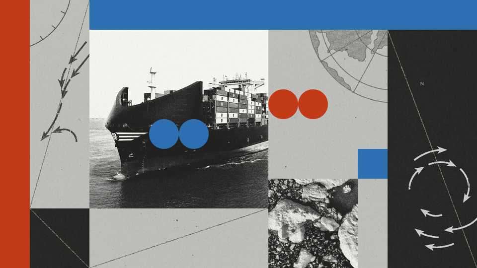
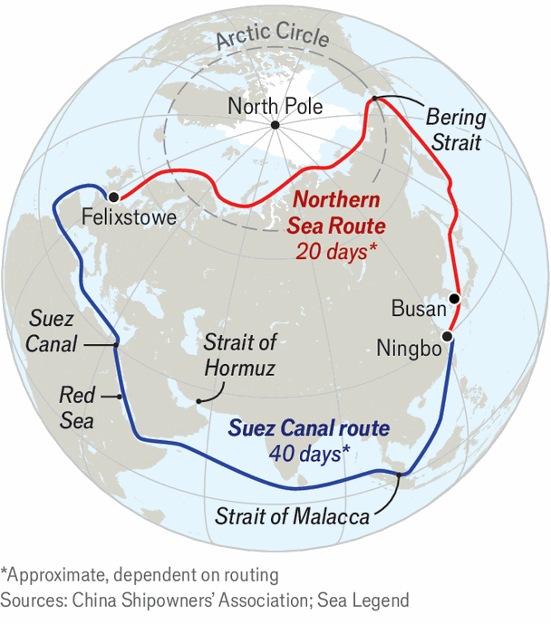

The promise and the pitfalls of China’s new Arctic shipping route
The Northern Sea Route is a pricey and risky alternative to the Suez Canal

Aug 20th 2026
FOR A WORLD newly preoccupied with maritime choke points, the voyage of the Dubai Tower offers a flicker of promise. The container ship set off from the Chinese port of Ningbo on August 15th to begin the first regular cargo service between Asia and Europe via the Arctic Ocean. Sea Legend, the vessel’s Chinese owner, says that it will complete the 5,000km journey to Felixstowe, on Britain’s east coast, in about 20 days. That is roughly twice as fast as sailing the usual route via the Suez Canal. Crucially, the “Arctic Express” (as the company calls the service) avoids the risk of being entangled in the Middle East’s military conflicts.

The new service via the so-called Northern Sea Route (NSR), which runs through the Bering Strait and over the top of Russia, is an early test of China’s Arctic ambitions. In 2018 the country outlined plans to develop shipping routes, mining and infrastructure in the Arctic, hoping to take advantage of rapidly receding polar ice. Many of the plans, which are marketed collectively as a “polar silk road”, have met resistance. Seven of the eight countries with Arctic territory are Western democracies. They worry that China is working closely with Russia in the region and that Chinese activities there could be useful for future military purposes, such as operating submarines. Some bridled at China, whose northernmost point is on about the same latitude as Hamburg, declaring itself a “near-Arctic state”.
Nonetheless China hopes to attract fresh interest in the northern route from governments and companies alarmed by the closure of the Strait of Hormuz and the threat from Iranian-backed Houthi fighters to shipping in the Red Sea. China is also more anxious than ever about its own reliance on the narrow Malacca Strait, the hinge between the Indian Ocean and the Pacific, through which most of its energy imports pass. And China will soon not be alone on the NSR. In June Japan said that it would revise its Arctic policy to promote the route. A South Korean shipping company, PanStar, plans to send one of its container ships on a trial run through the Arctic Ocean on August 22nd, aiming to complete the voyage from Busan to Felixstowe in just 18 days.
Thanks to climate change, conditions for the NSR are likely to grow more favourable. The minimum summer extent of Arctic ice has been shrinking by more than 12% a decade. In March the maximum extent of winter ice reached its lowest level since records began in 1979. On August 16th, the latest available reading, Arctic ice covered 5.5m square kilometres. That is well below the median extent of ice on the same date in the years between 1981 and 2010 but above the lowest ever extent, recorded in 2012. That September, the ice shrank to just 3.4m square kilometres.
One selling point for Sea Legend’s service is that a shorter sailing time means less fuel burned—fuel accounts for seven-tenths of shipping costs. That also reduces carbon emissions. And cooler weather on the Northern Sea Route is better for transporting some high-tech goods that are sensitive to temperature. Without refrigeration, temperatures inside containers on the Suez Canal route can reach 60°C. The Dubai Tower is carrying goods including batteries, solar modules and electric-vehicle components, mainly from cities in China’s Yangzi river delta.
For all those apparent advantages, the Arctic Express also highlights the limitations of the NSR. It will run only from August to October, when the route is largely free of ice. Sea Legend plans eight voyages in that window, using seven vessels. For the rest of the year, only ships with reinforced hulls may navigate the Arctic. Sea Legend has bought or leased some of these, but only relatively small ones, as they are costly and in short supply. They may also need to be escorted by Russian nuclear-powered icebreakers. All the extra costs erode the northern route’s price advantage.
So do insurance premiums. They are usually higher for the NSR than for the Suez Canal, despite war-risk premiums for the canal. They are also 40% higher than for sailing around the Cape of Good Hope, the chief alternative to the Suez Canal. Allianz, an insurance giant, warned in its recent annual safety review of the shipping industry that the remote Arctic route posed significant extra risks because of its harsh weather and the limited infrastructure available for repairs, assistance, rescue or salvage. It said that machinery damage or failure caused almost half of the reported shipping incidents in Arctic waters in the past decade.
The environmental impact is potentially greater, too. Bellona, a Norwegian environmental group, warned in a report last year that in the Arctic there are no effective ways to deal with fuel spills because of the difficulty of cleaning up fuel in cold conditions and the distance from emergency-response centres. (The International Maritime Organisation has banned the use and carriage of heavy fuel oil in the Arctic since 2024, though Russia does not heed the ban.) Noise pollution from ships also affects marine mammals such as whales and walruses in the Arctic more than elsewhere, since low-frequency sounds travel farther in cold water. Ships on the northern route pass through vital feeding and breeding grounds.
International carriers avoid the route in large part because of geopolitical risk. Ships on the NSR often need permits, ice-breaking services or other assistance from Russia, potentially violating Western sanctions linked to its war in Ukraine. Shipping may in future be disrupted by an intensifying contest between Russia and other countries to control the region’s ample mineral resources. The Arctic, once preserved as a zone of peace, is becoming increasingly militarised, as Donald Trump continues to threaten Greenland and NATO seeks to deter Russian aggression on its northern flank.
All this helps to explain why total transit cargo on the Northern Sea Route was just 3.2m tonnes in 2025, up from about 3m the year before. That is tiny compared with about 464m tonnes through the Suez Canal last year. The bulk of Arctic shipping is between Russian and Chinese ports, rather than between Asia and Europe, much of it consisting of shipments of Russian oil or gas. In a recent report, the Clingendael Institute, a Dutch think-tank, concluded that the route’s “most viable function…remains that of a selective corridor for Arctic resource exports.”
Still, as Malte Humpert of the Arctic Institute in Washington argues, the NSR will grow in importance for China as a seasonal trade corridor for when traditional routes are disrupted. He envisages hundreds of annual container passages a decade hence. “The question is when Western operators decide to re-enter the market—and more importantly, whether they still can,” Mr Humpert says. Arctic navigation requires training and operational experience, and “China and South Korea are building that expertise now.”
For the moment, Sea Legend admits, the tight seasonal window and limited capacity of its Arctic service make it hard to compete with conventional routes. But it is already planning to expand the navigational window to four months by 2028 and eventually to the entire year. Further conflict in the Middle East could provide incentives for it and other companies to invest in larger, ice-strengthened ships. And if temperatures in the Arctic continue to rise three times faster than the global annual average, then doubts about the viability of the NSR may recede as fast as China’s ambitions for the region grow. ■
Subscribers can sign up to Drum Tower, our new weekly newsletter, to understand what the world makes of China—and what China makes of the world.